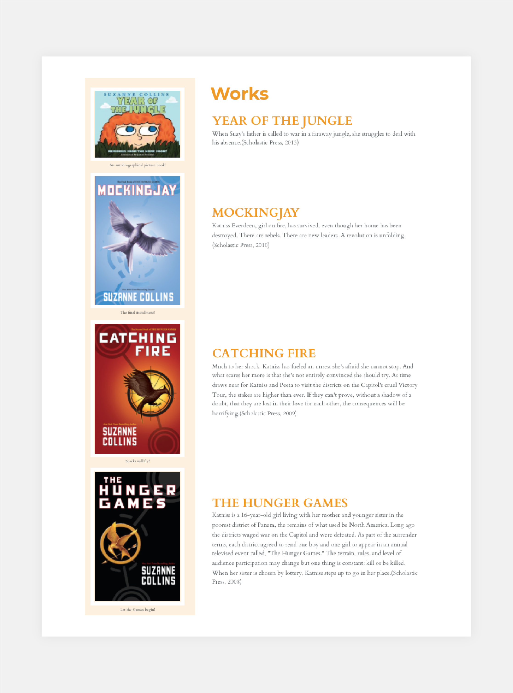
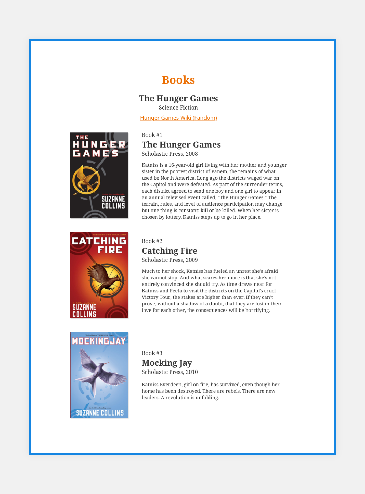
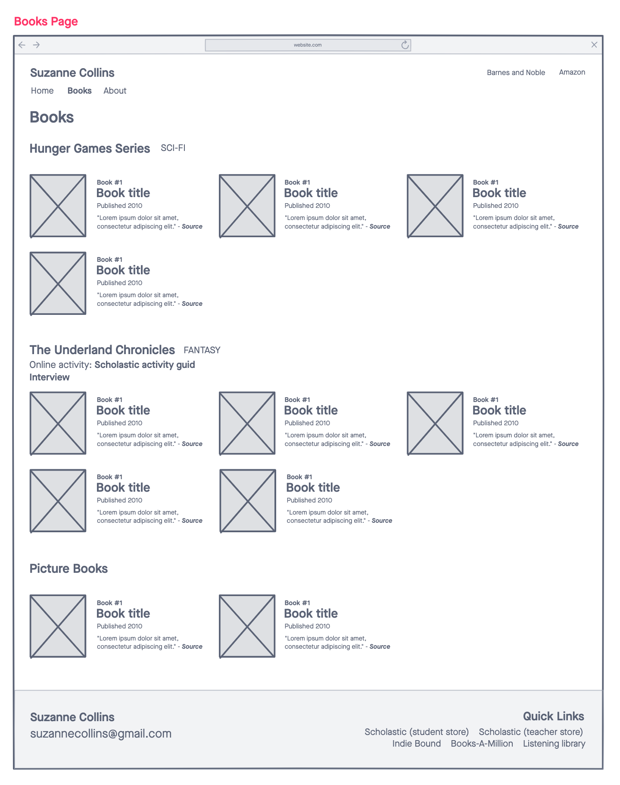
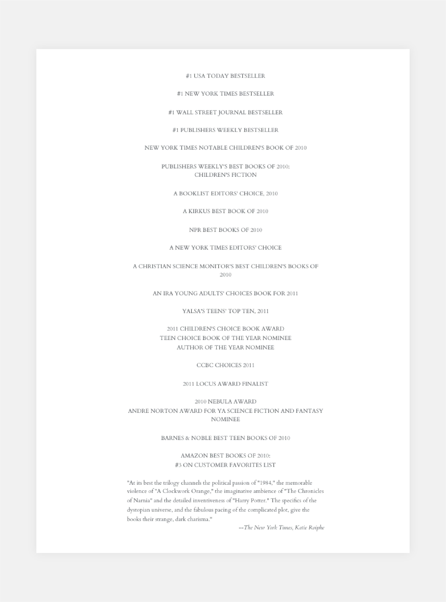
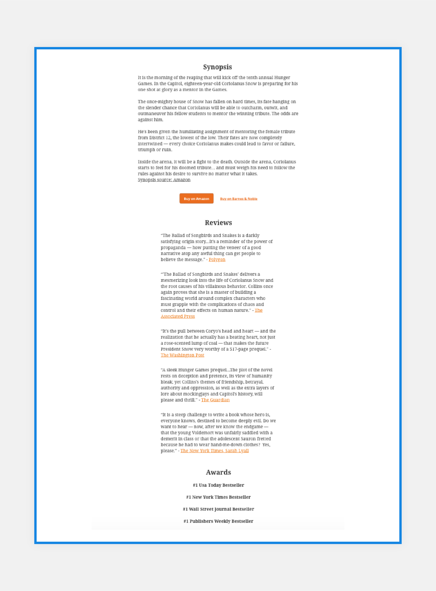
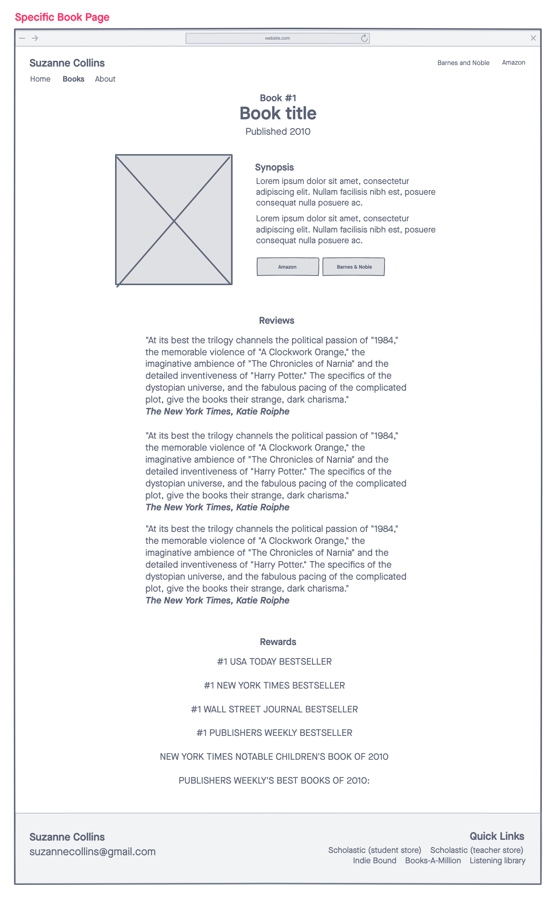
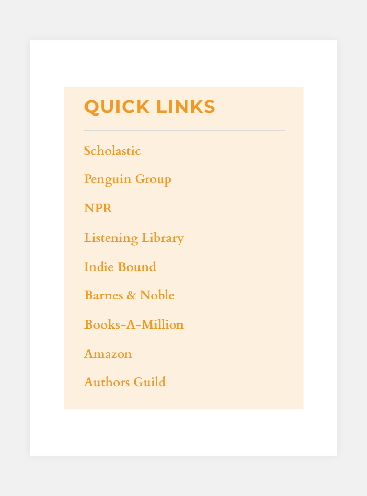

Project Overview
Author of The Hunger Games, Suzanne Collins needed help with her website. After conducting a usability evaluation, and site testing I constructed a working prototype for desktop and mobile devices that solved user pain points.
Link to Adobe Xd desktop prototype Link to Adobe Xd mobile prototypePain points
Confusing Book Order
Original Design
New Design
Explanation
I organized the books into three categories: The Hunger Games, The Underland Chronicles, and Picture Books. I also included the book number, and publication date with the book title.
Wireframes
Low Quality Information
Original Design
New Design
Explanation
Based on user feedback, I added a synopsis and moved the awards below the reviews. Each review now has a link to its source for further reading.
Wireframes
Difficulty Buying A Book
Original Design
New Design
Explanation
I relocated the “quick links” to the footer and gave primary focus to the Amazon and Barnes and Noble links. These are placed under the synopsis and again under the awards on each book page.
Low Scannability
Original Design
New Design
Explanation
Utilizing varying font weights and indentation I was able to improve the scannability of the information. I also turned book titles into hypertext to improve navigation.
Reflection
This was the first time I did a thorough usability evaluation and I learned a lot through the process. I discovered that you don’t need a large pool of participants to discover user pain points through site testing. I was surprised at how much I learned from watching users interact with the site.